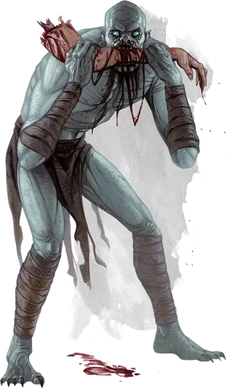

Упырь
Ghoul
Средняя Нежить, Хаотичная Злая

Класс Защиты 12 Инициатива +2 (12)
Хиты 22 (5к8)
Скорость 30 футов
| мод | спас | ||
|---|---|---|---|
| СИЛ | 13 | +1 | +1 |
| ЛОВ | 15 | +2 | +2 |
| ТЕЛ | 10 | +0 | +0 |
| мод | спас | ||
|---|---|---|---|
| ИНТ | 7 | −2 | −2 |
| МДР | 10 | +0 | +0 |
| ХАР | 6 | −2 | −2 |
Иммунитеты Яд; Истощение, Отравленный, Очарованный
Чувства Тёмное зрение 60 футов, пассивное Восприятие 10
Языки Общий
Опасность 1 (200 опыта; БВ +2)
Действия
Мультиатака. Упырь совершает две атаки Укусом.
Укус. Бросок рукопашной атаки: +4, досягаемость 5 фт. Попадание: 5 (1к6 + 2) Колющего урона плюс 3 (1к6) Некротического урона.
Когти. Бросок рукопашной атаки: +4, досягаемость 5 фт. Попадание: 4 (1к4 + 2) Рубящего урона. Если цель — существо, но не Нежить и не эльф, она подвергается следующему эффекту. Спасбросок Телосложения: Сл 10. Провал: Цель становится Парализованной до конца своего следующего хода.
Бонус мастерства +2
Среда обитания Болота, Город, Подземье
Сокровища Любые
Упыри
Пожиратели мертвечины
Стаи упырей рыщут по гниющим закоулкам мира, алчно охотясь за трупами и теми, кому вот-вот суждено ими стать. Эти исхудалые ожившие мертвецы с неестественно длинными языками обитают в катакомбах и развалинах, где разрывают могилы в поисках их содержимого и нападают на живых, парализуя ударами страшных когтей.
Упыри восстают из тел каннибалов и злодеев, обуреваемых порочными страстями. Сбиваясь в стаи, они следуют общему зову ненасытной утробы.